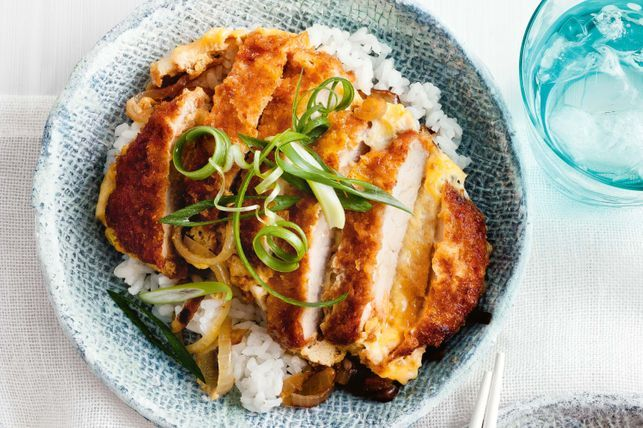

Katsudon

Ingredients
2 Cups of SunRice Japanese Style Sushi Rice
4 x 100g Pork Loin Steaks
5 Eggs
75g Plain Flour
100g Panko Breadcrumbs
Vegetable Oil
80ml Chicken Stock
Soy Sauce
White Sugar
Brown Onion
Thinly Sliced Green Shallots